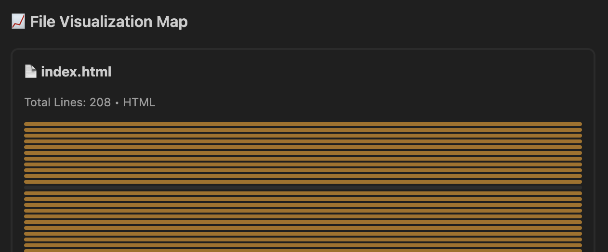
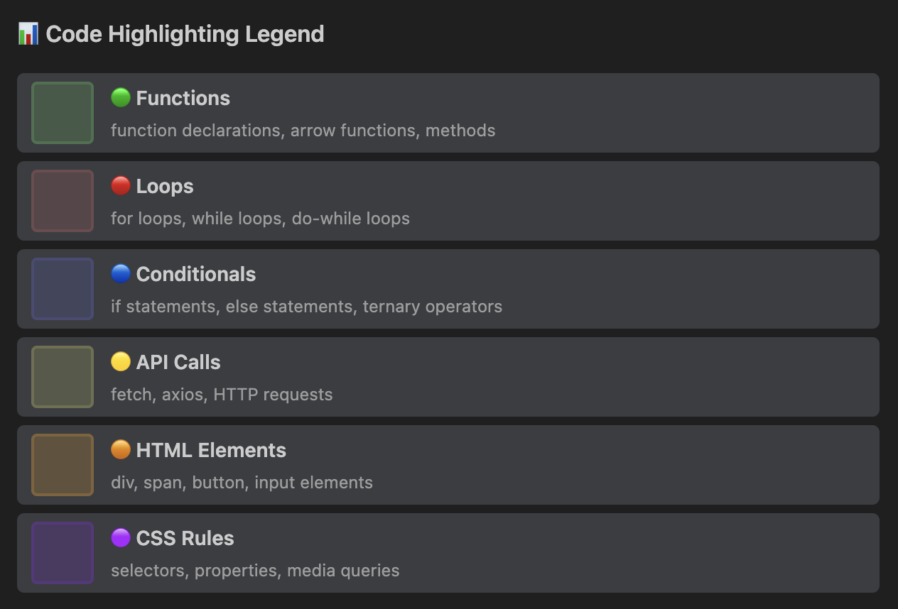
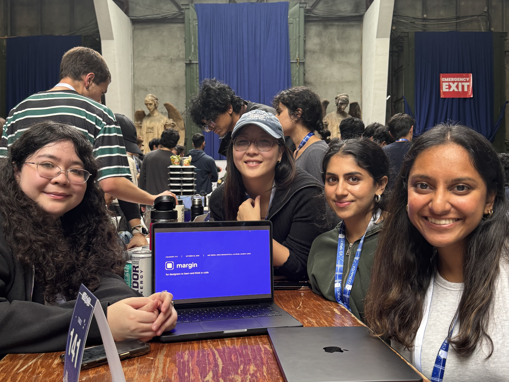

Background & Context
The gap between designers and developers is shrinking, with AI tools that allow designers to generate large amounts of code easily. However, without an engineering background, even well-written code can feel opaque. We asked: how might we help designers engage meaningfully with code without having an engineering background?
Defining the Problem
Designers and PMs who work closely with engineering teams often find themselves staring at code they can't fully parse — understanding what a component does, how it's structured, or why it was written a certain way. We built margin to close that gap.
Our Solution
margin lives inside VS Code as an extension. Users toggle it on and it immediately goes to work — visually annotating the code in front of them. The result is a layer of comprehension on top of existing code, without modifying the code itself.
Toggle Mode — a switch that allows users to call up margin when needed.
Code breakdown and highlighting — margin groups and highlights sections of code by functionality, giving users a visual sense of how the file is structured at a glance.
AI-powered hover descriptions — Hovering over a highlighted chunk surfaces a plain-language explanation of what that code does, contextualized within the broader project.
File visualization — A high-level preview of the overall structure of the code, allowing users to quickly understand what elements make up the code.


How We Built It
We built margin as a native VS Code extension and integrated the OpenAI API to handle code parsing and generate natural language explanations. The extension reads the active file, segments it into logical chunks, and feeds those chunks to the model to produce context-aware descriptions on demand.
One of our main challenges was that none of us had built a VS Code extension before. I spent a lot of time understanding how to integrate with the OpenAI API, parsing code, and debugging.
- VS Code Extension API
- OpenAI API
- Cursor
- Claude
- User toggles margin "On"
- Reads the active file in VS Code
- Segments file into logical code chunks
- Feeds chunks to the model for context-aware descriptions
- Surfaces explanations on hover — no code modification
Impacts
Our roadmap focuses on deepening the comprehension layer and improving the overall experience.
Bridging Design & Code — Designers can gain a clear mental model of how their ideas are translated into real, editable code, removing the "black box."
Building Technical Confidence — By visually explaining structure and logic, margin reduces intimidation and helps designers feel capable of editing and experimenting with code.
Enhancing Collaboration — Developers and designers can communicate more effectively through shared understanding, speeding up iteration and improving final product quality.
Tradeoffs
With 36 hours, every feature we added was a feature we chose over something else. Two things we cut deliberately:
Codebase-level navigation — understanding how files relate to each other, not just what's inside one. While this would have been valuable, it turned out to be too complex to ship well in time.
Inline editing suggestions — helping designers make small code changes, not just understand them. However, this would have taken the MVP in a different direction than pure comprehension.
We shipped the comprehension layer first. Everything else builds on top of that.
Retrospective
- New technical skills are learnable under pressure. We each learned how to build a VS Code extension from scratch — a genuinely new skill for all of us, acquired in a single sprint.
- Scope management is a product skill. With limited time, we had to make fast, deliberate tradeoffs — deciding which features made the MVP and which could wait. That discipline shaped the product significantly.
- AI is a real development accelerator. Tools like Cursor and Claude made it possible for a team without deep engineering backgrounds to ship something genuinely technical. We experienced firsthand what AI-assisted development enables.
- Build for yourself first. The clearest signal that we were solving a real problem was that we benefited from the tool itself.
If I had more time...
Information architecture view — a high-level visual map of how a codebase is organized, helping designers understand structure before diving into individual files.
Code heatmaps — visual indicators of complexity, frequency of change, or other signals that help designers know where to focus.
Validate with real users — we built for ourselves, which was a strong signal, but I'd want to put it in front of 5–10 designers on engineering-heavy teams to learn where the comprehension layer actually breaks down.
